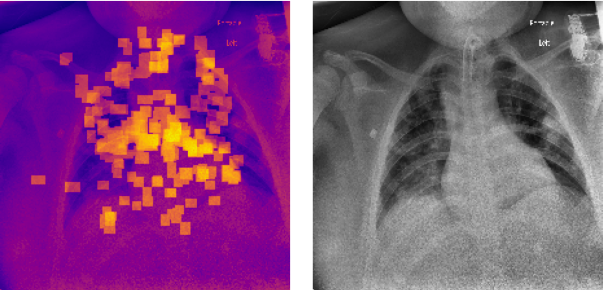

|
← Back to Home
COVID Severity Detection in Pediatrics
Fall 2022 – Spring 2023

Classifying COVID-19 severity using Chest X-Ray images and clinical data, developed in collaboration with Texas Children's Hospital. Vision Transformer backbones and calibrated ensembles improved risk stratification.
- Multi-modal fusion of CXR and tabular clinical features.
- Calibration-aware training and evaluation for clinical interpretability.
- Data governance and de-identification aligned with IRB requirements.
|